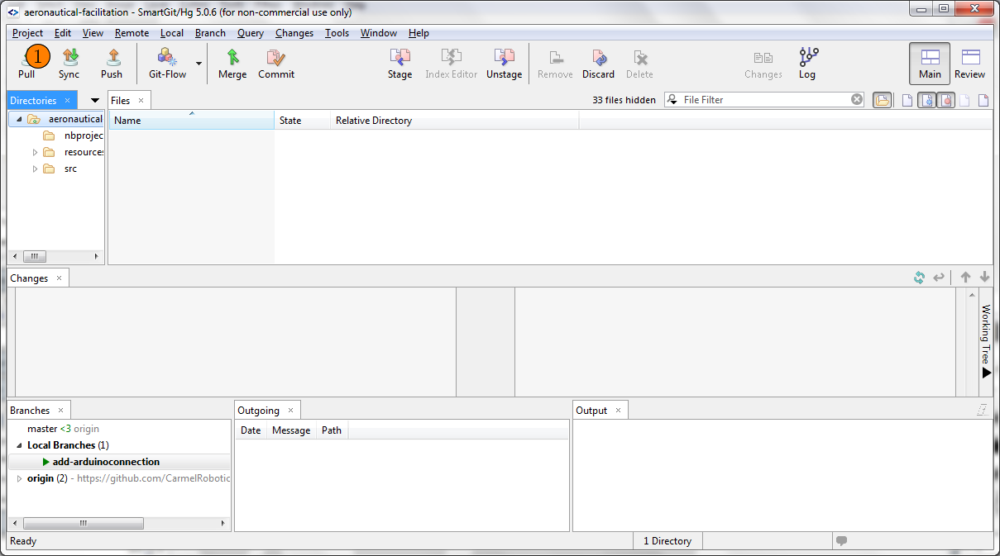
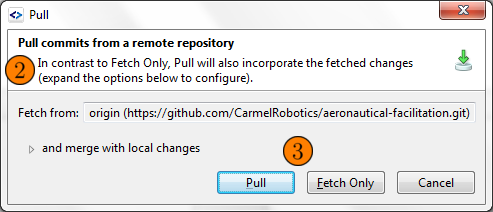
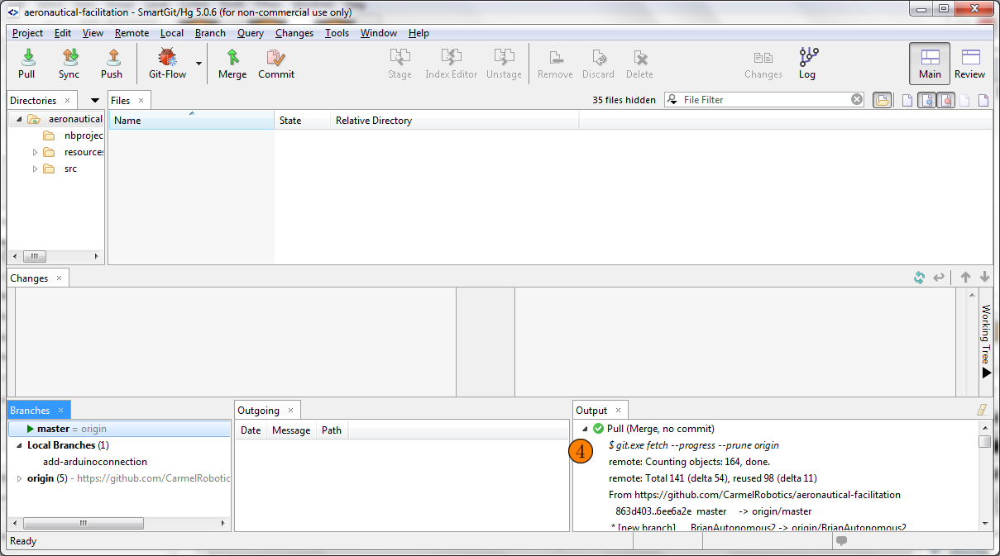

Team2035 ScreenCapture Website
Based at Carmel High
How to: Pull request

1. SmartGit main window, press the Pull button

2. Read the difference between pull and fetch.
3. Press pull button if available, or fetch button if not. If pull is not available it means you are on a branch that isn't on github yet.

4. Notice the successful green icon in the main window's output.